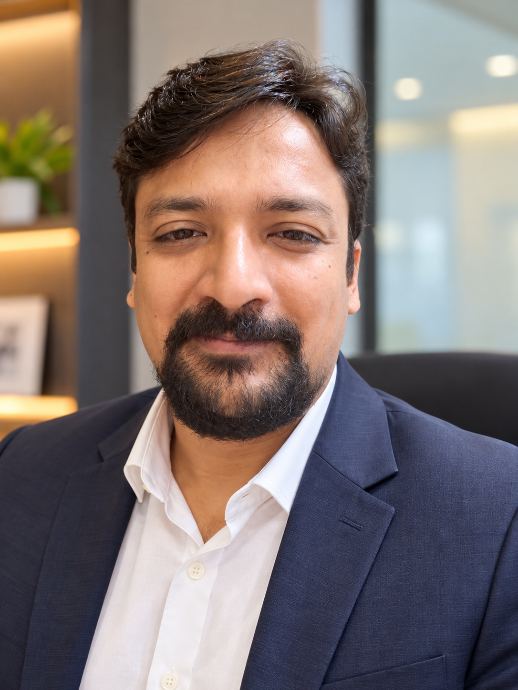
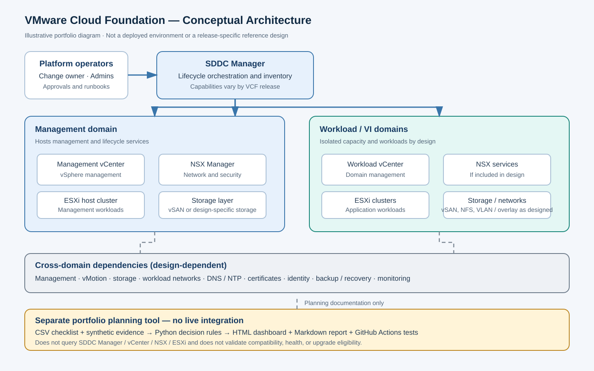
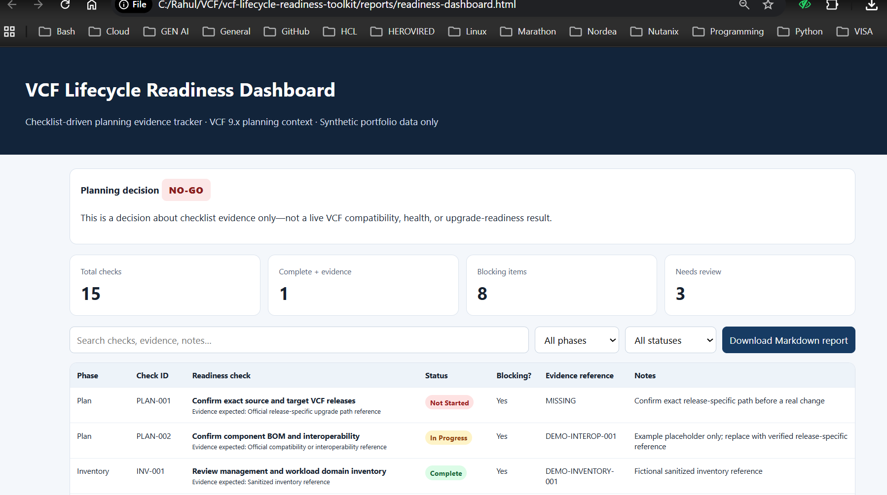
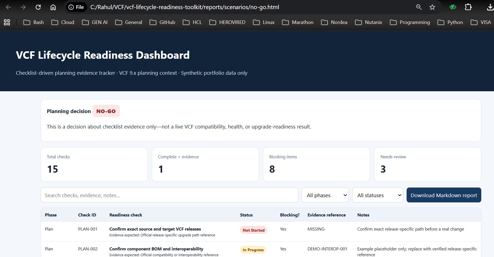
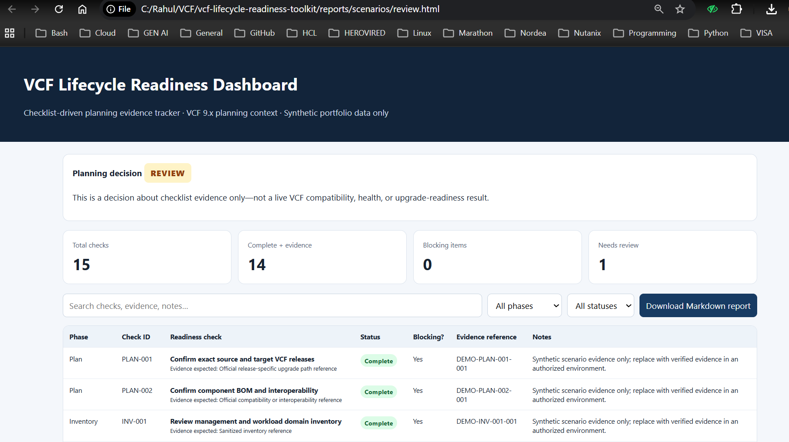
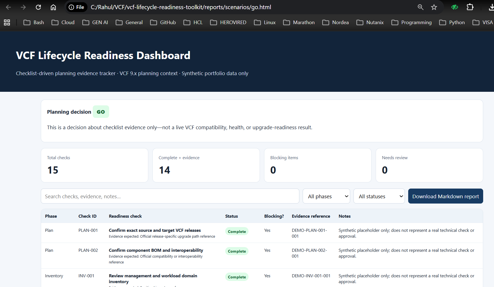

Virtualization
Enterprise virtualization, infrastructure administration, and platform operations.
VMware Cloud Foundation | vSphere | ESXi | vCenter | Infrastructure Automation | Hybrid Cloud VMware VCF and enterprise infrastructure specialist with 15+ years of IT experience, focused on virtualization, cloud infrastructure, automation, and modern deployment technologies. I design, support, and modernize enterprise infrastructure platforms, using cloud technologies and automation to improve reliability, operational efficiency, and scalability.

I am an enterprise infrastructure professional with 15+ years of experience across IT infrastructure, virtualization, platform operations, and infrastructure transformation.
My professional journey began with enterprise systems and Windows infrastructure, progressed into VMware technologiesΓÇöincluding ESXi, vCenter, and vSphereΓÇöand expanded into complex virtualization environments and modern software-defined data center platforms.
Today, my primary focus is VMware Cloud Foundation (VCF) and enterprise infrastructure. I bring experience across virtualization platforms, infrastructure operations, migrations, automation, and technical problem-solving in enterprise environments.
Alongside my VMware expertise, I work with AWS, Microsoft Azure, and Google Cloud, using tools such as Terraform, Ansible, and scripting to support infrastructure automation and modernization. My experience with Docker, Kubernetes, CI/CD, and observability further complements my infrastructure background.
Enterprise infrastructure and VMware Cloud Foundation are my primary focus, supported by infrastructure automation, hybrid-cloud engineering, and modern platform operations.
Enterprise virtualization, infrastructure administration, and platform operations.
Cloud infrastructure provisioning, deployment, and operational automation.
Repeatable infrastructure provisioning and configuration management.
Containerized applications, deployment workflows, and Kubernetes labs.
Source control, automation workflows, and repeatable deployment processes.
Metrics collection, dashboards, and centralized logging lab implementations.
Selected hands-on implementations across cloud infrastructure, automation, containers, and application deployment.
Infrastructure as Code project focused on provisioning cloud resources using reusable Terraform configuration.
Explore repositories →Containerized Node.js application services with Docker and Kubernetes deployment configuration.
Explore repositories →Hands-on deployment of microservices using Kubernetes Deployments, Services, and Ingress.
Explore repositories →GitOps workflow using Argo CD to synchronize Kubernetes deployments with a Git repository as the source of truth.
Explore repositories →Stream premium video content, host live watch parties manage your catalogue with a modern microservice architecture
Explore repositories →CI/CD pipeline for a Flask application, demonstrating automated build and deployment workflows.
Explore repositories →A Python-based, checklist-driven planning demonstration for tracking lifecycle readiness evidence, surfacing blockers, and generating an interactive dashboard and Markdown reports.

Conceptual illustration only; not a deployed topology or release-specific reference design.
The sample scenarios demonstrate how checklist evidence changes the planning result.


Blocking planning evidence is missing.

Blocking items are addressed in the sample, but review work remains.

The synthetic checklist satisfies the toolkit's documented planning rules.
Scope: This is a synthetic planning-evidence demonstration. It does not connect to SDDC Manager, vCenter, NSX, or ESXi and does not validate live compatibility, infrastructure health, upgrade eligibility, or operational approval.
Professional credentials across virtualization, cloud, and infrastructure technologies.
Interested in cloud infrastructure, VMware, automation, or technical collaboration? Connect with me through my professional profiles.